pyvista.plotting.charts.BarPlot.color_scheme#
- property BarPlot.color_scheme[ソース]#
プロットの色テーマを返すか設定します．
このスキームは，このプロットで描画されるさまざまなコンポーネントの色を定義します．使用可能な配色については，以下の表を参照してください．
備考
すべてのカラースキームの概要．
配色# 配色
解説
# 色
例
"spectrum"黒，赤，青，緑，紫，橙，茶
7

"warm"濃い赤 → 黄色
6
"cool"緑→青→紫
7
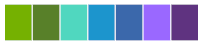 "blues"異なる色調の青
7
"wild_flower"青→紫→桃
7
"citrus"緑→黄→橙
6

"div_purple_orange11"濃い茶→白→濃い紫
11

"div_purple_orange10"濃い茶→白→濃い紫
10
"div_purple_orange9"茶→白→紫
9

"div_purple_orange8"茶→白→紫
8

"div_purple_orange7"茶→白→紫
7
"div_purple_orange6"茶→白→紫
6
"div_purple_orange5"橙→白→紫
5

"div_purple_orange4"橙→白→紫
4
"div_purple_orange3"橙→白→紫
3
"div_spectral11"濃い赤→薄い黄→濃い青
11
"div_spectral10"濃い赤→薄い黄→濃い青
10
"div_spectral9"赤→薄い黄→青
9
"div_spectral8"赤→薄い黄→青
8
"div_spectral7"赤→薄い黄→青
7
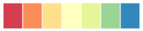 "div_spectral6"赤→薄い黄→青
6
"div_spectral5"赤→薄い黄→青
5
"div_spectral4"赤→薄い黄→青
4
"div_spectral3"橙→薄い黄→緑
3

"div_brown_blue_green11"濃い茶→白→濃い青緑
11
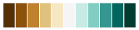 "div_brown_blue_green10"濃い茶→白→濃い青緑
10
"div_brown_blue_green9"茶→白→青緑
9
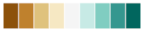 "div_brown_blue_green8"茶→白→青緑
8
"div_brown_blue_green7"茶→白→青緑
7
"div_brown_blue_green6"茶→白→青緑
6
"div_brown_blue_green5"茶→白→青緑
5

"div_brown_blue_green4"茶→白→青緑
4

"div_brown_blue_green3"茶→白→青緑
3

"seq_blue_green9"薄い青→濃い緑
9

"seq_blue_green8"薄い青→濃い緑
8
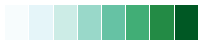 "seq_blue_green7"薄い青→濃い緑
7

"seq_blue_green6"薄い青→緑
6
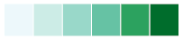 "seq_blue_green5"薄い青→緑
5
"seq_blue_green4"薄い青→緑
4
"seq_blue_green3"薄い青→緑
3

"seq_yellow_orange_brown9"薄い黄→橙→濃い茶
9

"seq_yellow_orange_brown8"薄い黄→橙→茶
8
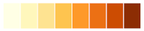 "seq_yellow_orange_brown7"薄い黄→橙→茶
7
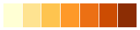 "seq_yellow_orange_brown6"薄い黄→橙→茶
6
"seq_yellow_orange_brown5"薄い黄→橙→茶
5
"seq_yellow_orange_brown4"薄い黄→橙
4
"seq_yellow_orange_brown3"薄い黄→橙
3

"seq_blue_purple9"薄い青→濃い紫
9
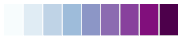 "seq_blue_purple8"薄い青→紫
8
"seq_blue_purple7"薄い青→紫
7
"seq_blue_purple6"薄い青→紫
6
"seq_blue_purple5"薄い青→紫
5
"seq_blue_purple4"薄い青→紫
4

"seq_blue_purple3"薄い青→紫
3
"qual_accent"パステルグリーン，パステルパープル，パステルオレンジ，パステルイエロー，ブルー，ピンク，ブラウン，グレー
8
"qual_dark2"qual_set2のダーク調
8
"qual_set3"パステルカラー: ブルーグリーン，ライトイエロー，ダークパープル，レッド，ブルー，オレンジ，グリーン，ピンク，グレー，パープル，ライトグリーン，イエロー
12
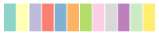 "qual_set2"ブルーグリーン，オレンジ，パープル，ピンク，グリーン，イエロー，ブラウン，グレー
8
"qual_set1"レッド，ブルー，グリーン，パープル，オレンジ，イエロー，ブラウン，ピンク，グレー
9

"qual_pastel2"qual_set2のパステル調
8
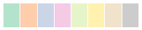 "qual_pastel1"qual_set1のパステル調
9
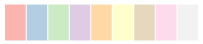 "qual_paired"ライトブルー，ブルー，ライトグリーン，グリーン，ライトレッド，レッド，ライトオレンジ，オレンジ，ライトパープル，パープル，ライトイエロー
11
例
棒グラフの色を暖色系の配色に設定します．
>>> import pyvista as pv >>> chart = pv.Chart2D() >>> plot = chart.bar([1, 2, 3], [[2, 1, 3], [1, 0, 2], [0, 3, 1], [3, 2, 0]]) >>> plot.color_scheme = "warm" >>> chart.show()
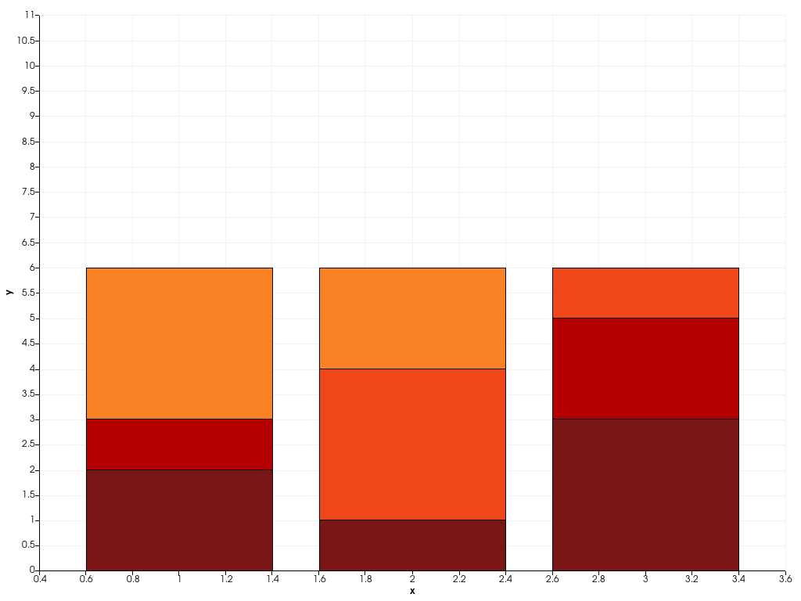